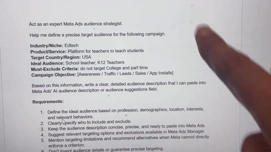
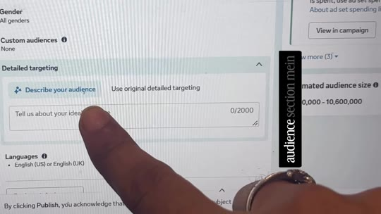
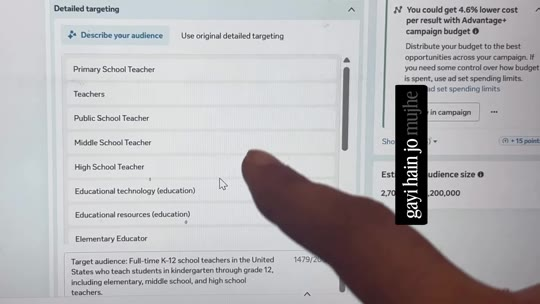

Meta-Ads · AI-Targeting
Using Meta's 'Describe Your Audience' AI Feature with ChatGPT
Library / Meta-Ads / AI-Targeting
A practical breakdown of Meta's native "Describe your audience" AI feature inside Ads Manager. Instead of manually guessing detailed targeting keywords or suffering broad algorithmic drift, advertisers use a structured ChatGPT prompt template to generate a cohesive ~1,500-character persona specification (demographics, inclusion criteria, explicit exclusions, and behavioral signals), which Meta's engine parses into exact verified interest categories.

Steps
- Diagnose Targeting Mismatch: Advertisers frequently waste ad budget when basic age/gender criteria fail to constrain Meta's delivery algorithms away from low-intent viewers. (00:00–00:12)
- Open the AI Audience Field: In Meta Ads Manager, edit your campaign ad set. Under the Detailed targeting section, click the Describe your audience tab to open the
Tell us about your ideal audiencefield (supports up to 2,000 characters). (00:20–00:25) - Generate Persona via ChatGPT: Paste the audience strategist prompt into ChatGPT, filling in your specific Industry/Niche, Product/Service, Target Region, Ideal Audience, Must-Exclude Criteria, and Campaign Objective. (00:26–00:30)
- Paste into Meta Ads: Copy ChatGPT's formatted natural language description (e.g. ~1,479 characters defining full-time employment, educational scope, explicit exclusions of college faculty) directly into Meta's text box. (00:31–00:36)
- Click 'Find options': Press the green Find options button. Meta automatically evaluates the semantic description and matches it against its active interest database, populating specific job titles and interests (e.g. Primary School Teacher, Middle School Teacher, High School Teacher, Educational technology). (00:37–00:43)


Verbatim
| When | Where | Text |
|---|---|---|
| 00:01 | screen | what is wrong meta ads · I just spent 15,000 rupees on ads and this this is the audience that my ads are reaching |
| 00:22–00:25 | screen | Detailed targeting · Describe your audience · Use original detailed targeting Tell us about your ideal audience 0/2000 |
| 00:27 | screen | Act as an expert Meta Ads audience strategist. Help me define a precise target audience for the following campaign. Industry/Niche: Edtech Product/Service: Platform for teachers to teach students Target Country/Region: USA Ideal Audience: School teacher, K12 Teachers Must-Exclude Criteria: do not target College and part time Campaign Objective: [Awareness / Traffic / Leads / Sales / App Installs] Based on this information, write a clear, detailed audience description that I can paste into Meta Ads' AI audience description or audience suggestions field. Requirements: 1. Define the ideal audience based on profession, demographics, location, interests, and relevant behaviors. 2. Clearly specify who to include and exclude. 3. Keep the audience description concise, precise, and ready to paste into Meta Ads. 4. Suggest relevant targeting options and exclusions available in Meta Ads Manager. 5. Mention targeting limitations and recommend alternatives when Meta cannot directly enforce a criterion. 6. Don't invent audience details or guarantee precise targeting. Output format: A. Copy-paste audience description B. Suggested targeting options C. Exclusions and irrelevant segments D. Best practices for improving audience precision |
| 00:32–00:36 | screen | Target audience: Full-time K-12 school teachers in the United States who teach students in kindergarten through grade 12, including elementary, middle school, and high school teachers. Location: United States. Age: Adults aged 25-65 as an initial testing range, subject to campaign requirements and available targeting options. Professional relevance: Teachers currently working in K-12 schools, including public and private school educators who teach standard academic subjects. Interests and signals: Education, K-12 education, teaching, classroom instruction, educational technology (EdTech), digital learning tools, online teaching resources, classroom activities, student engagement, and teacher professional development, where these options are available in Meta Ads Manager. Exclude: College and university instructors, higher education faculty, college professors, and people whose primary teaching focus is higher education. Avoid targeting audiences primarily seeking part-time teaching jobs or casual teaching work where suitable exclusion options exist. Prioritize relevance to active K-12 educators. Do not assume that an education-related interest or job title confirms current employment as a full-time school teacher. Use current employment... (1479/2000) |
| 00:41 | screen | Primary School Teacher Teachers Public School Teacher Middle School Teacher High School Teacher Educational technology (education) Educational resources (education) Elementary Educator |
| — | caption | New Meta Update - Comment ‘Meta Ads’ to get the prompt template in your DM Follow @marketingpulse.pro for more content |
Tools & links
- Meta Ads Manager — Campaign manager with "Describe your audience" feature — adsmanager.facebook.com
- ChatGPT — Persona expansion and prompt structuring — chatgpt.com
- Creator profile — @marketingpulse.pro (Ashish Jaiswal | Meta Ads & AI) — instagram.com/marketingpulse.pro
Try this
- When testing a new niche in Meta Ads, avoid guessing 1-2 generic interests. Run your product definition through the audience strategist prompt and test the generated description against Meta's suggestions.
- Include explicit negative constraints in your ChatGPT prompt (e.g. "exclude part-time and college faculty") to force the generated narrative to specify clean negative boundaries.
Open questions
The video demonstrates Meta's "Describe your audience" feature, which is currently rolling out in phases across global ad accounts. Accounts that do not yet have the AI description box can still click "Use original detailed targeting" to input the suggested interest keywords manually.